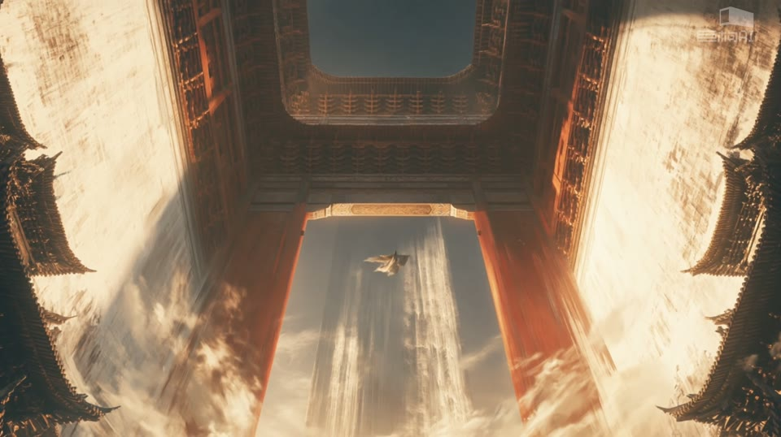
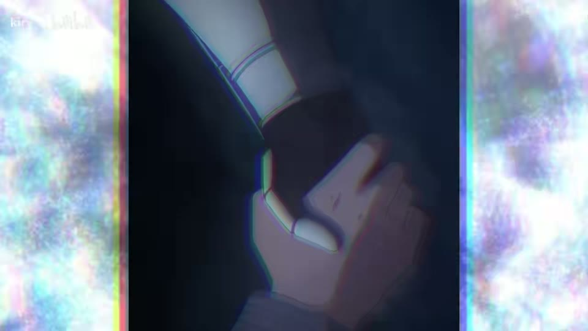
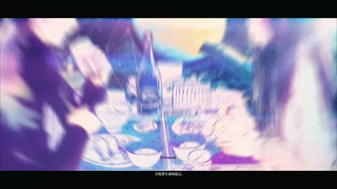
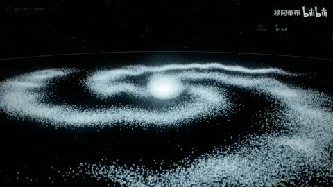

← 案例图谱AI31 / 局部机制／局限参考
巨构：缘起性空〖AI全民制作人〗
巨构AI · 110.1万播放快照 · ≥10万 · B站原作 ↗
圆门、白墙瀑布、侧桥、树影、圆环寺院沿用AI28/32相近构图词汇，单片有视角变化，但新增路线不能与同系列重复累计。

约40.000秒 · 案例代表帧从画面里找依据
这一例先看什么
圆门、白墙瀑布、侧桥、树影、圆环寺院沿用AI28/32相近构图词汇，单片有视角变化，但新增路线不能与同系列重复累计。
审美判断
红色圆门/月轮、柱列、云中人物之间主次清楚，白墙瀑布大明暗面有层级；少量角标保持辅助。
迁移到自己的题材
世界观设定、建筑概念、游戏场景、旅行氛围、神圣感、孤独感或压迫感。
教学提问：画面里有什么告诉观众“它有多大”？哪些地方值得停留，哪些重复景观可以删掉？
带画面的分析单元
图像标出取样时间，对应观察中的关键状态。单帧不能独立证明运动，连续性请结合摘录。表达作用与应用场景是教学解读，复现路线是建议，不是原作者工程还原。
分析单元 01 / 0—10.55秒
圆门／月亮／巨墙瀑布
实际观察
红色圆门对圆月和小白衣人物，接俯瞰长墙瀑布，再接崖间塔楼与桥。
表达作用（教学解读）
通过变化与稳定的比例让信息有轻重。视觉密度来自切镜、版式与局部动画三个层面，不只靠刀数。
具体应用场景
所有形式；尤其高潮前的蓄力、解释段的阅读、回忆段的停留和快慢对照。
复现建议（非原作者工程还原）
门框借景、红白对比、微小人物尺度参照；瀑布需要源视频/3D，可简化为流动噪声遮罩。
直出判断：门光/调色和简化水纹容易；完整巨墙与瀑布融合较难
常见误用：全片等密度；把闪帧当新镜；高切速被当成质量分；没有稳定段供观众理解。
分析单元 02 / 10.55—25.906秒
浮空门楼／侧向桥梁／树影投射
实际观察
巨大门楼在云上，桥绕山崖，22秒长白墙与树影、红色柱列。
表达作用（教学解读）
通过变化与稳定的比例让信息有轻重。视觉密度来自切镜、版式与局部动画三个层面，不只靠刀数。
具体应用场景
所有形式；尤其高潮前的蓄力、解释段的阅读、回忆段的停留和快慢对照。
复现建议（非原作者工程还原）
前景暗/主体亮分层，树影用透明纹理/投影遮罩，云层分速度移动。
直出判断：树影/云雾和慢推容易；复杂建筑结构需要美术素材
常见误用：全片等密度；把闪帧当新镜；高切速被当成质量分；没有稳定段供观众理解。
分析单元 03 / 25.906—41.262秒
斜构图／洞口落水／巨门仰拍
实际观察
倾斜宫阙与圆洞水幕，随后高位长墙，36–40秒暖光巨门仰拍和落水。
表达作用（教学解读）
通过变化与稳定的比例让信息有轻重。视觉密度来自切镜、版式与局部动画三个层面，不只靠刀数。
具体应用场景
所有形式；尤其高潮前的蓄力、解释段的阅读、回忆段的停留和快慢对照。
复现建议（非原作者工程还原）
相机旋转裁切建立斜线，垂直水纹分层；门内外光照和透视需要源图/生成。
直出判断：旋转/调色/简化水幕中等；可信立体建筑与水流难
常见误用：全片等密度；把闪帧当新镜；高切速被当成质量分；没有稳定段供观众理解。
分析单元 04 / 41.262—51.667秒
中心天光／瀑布轴线／镜面倒影
实际观察
云中中心光束落入宫阙，46秒白墙与红柱在前方水面倒映。
表达作用（教学解读）
用熟悉尺寸与层次，让宏大空间被感知；留停帮助观众建立尺度。
具体应用场景
世界观、建筑概念、场景设定、神圣、敬畏、孤独和压迫。
复现建议（非原作者工程还原）
径向光束、镜像图层配波纹位移、薄雾叠加；真实反射视角需3D/源画面。
直出判断：简化光束和倒影容易；几何正确的反射较难
常见误用：没有比例参照；每镜同一宏大构图；雾遮住所有结构；反射与相机运动不一致。
分析单元 05 / 51.667—61.7651秒
圆环框景／云海寺院／红柱片尾
实际观察
巨大圆环围住远处寺院，小人物立于台上；最后低视点屋檐和红柱沉入雾。
表达作用（教学解读）
用少量形状、方向和重复建立性格，让图形与人物一起表达轻盈、秩序或紧张。
具体应用场景
青春、角色介绍、音乐视觉、活动包装、清楚的图形风格。
复现建议（非原作者工程还原）
圆环前景遮罩、云海底层与寺院远层，微移/缩放形成视差；柱间阴影统一。
直出判断：有分层素材后框景/雾层容易；建筑美术和补洞需处理
常见误用：形状种类与颜色都无限增加；图形仅为填空；不顾人物视线与轮廓。
用连续画面核对
保留原研究的多段局部摘录。片段含音轨不代表已听审；本资料不评价音乐卡点或对白节奏。
短时变化怎样理解
4–6、15–17、51–55秒各确认1处主替换；水幕、云层和人物运动独立记录，非高速剪辑样本。
把镜头连接、版式更新、局部图层变化和镜内运动分开记录。所查窗口是下限，不是全片平均或AI／人工排名。
原始逐窗记录 →这次练习的约束
同一环境做“敬畏”和“孤独”两版，不换主体，仅改变人物比例、负空间、镜头停留和前景遮挡。
先写“我希望观众明白／感到什么”，再选本页的一种手法。完成无效果基础版后再加层；解释新增层带来的收益和代价。
打开练习与复盘表 →来源、观看范围与制作归属
实际检查范围：实际查看31张约2.02秒概览0–60.7（2表），4.011–5.962与15.03–16.982共56密集帧（4表，实际约13.84/s）；51.017–54.919另37帧（3表，实际约9.22/s，标头请求12/s）。源61.765079秒3840×2148，ffprobe r_frame_rate=83/3，采样依据实际PTS。三段4秒摘录。未听审，未连续完整音画观看。
制作线索：巨构AI，第一方110.1万、2026-08-07；含AI生成内容、AI合成标记，片头角标称updream制作。品牌标记不证明具体模型版本、自动分镜或剪辑程度。
边界：视觉作为同系列框景/倒影参考保留，不因高播放自动列独立能力证明；updream标记不能审计模型或剪辑分工。
播放快照保存时间（UTC）：2026-10-20T15:01:56.675433+00:00。H30制作方式为推定；同源改编、仿作和转载依原记录标注。
原始案例记录 · 选样表把你的判断留下来
笔记仅尝试保存在本机浏览器；浏览器策略可能限制本地文件存储，重要内容请导出。
沿着同一问题继续阅读

H37方向、冲击与节奏
拉弓动作对应、矩形/菱形窗口和宽窄画幅转换有可复现构图组织，参考来源已披露。
主要样本6个分析单元

H31漫画、纸张与记忆
前段小窗拼贴逐步进入满幅能量空间，结尾缩回黑底方幅与白纸字卡；亮色高潮和留白尾声形成明显密度变化。
主要样本7个分析单元

AI50几何、粒子与解释
点云、星系、环与字符空间如何维持视觉中心？这里的程序几何与文生视频是不同路径，执行规则不等于自动获得叙事。
主要样本6个分析单元